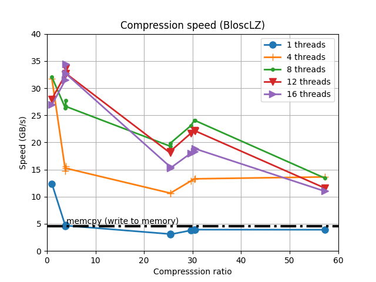
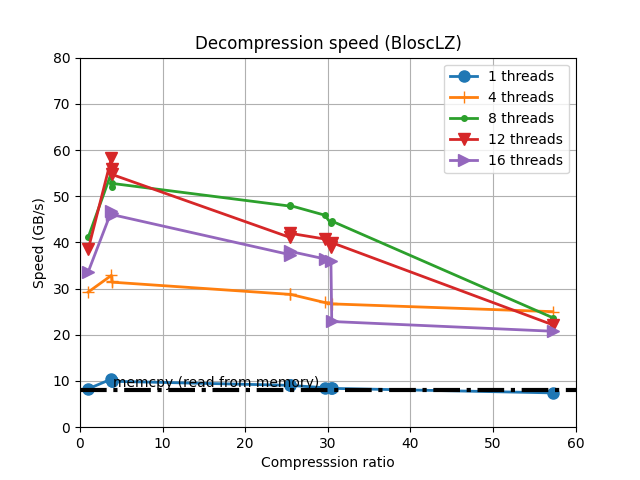

What Is Blosc?
Blosc is a high performance compressor optimized for binary
data. It has been designed to transmit data to the processor cache
faster than the traditional, non-compressed, direct memory fetch
approach via a memcpy() OS call. This can be useful not only
to reduce the size of large datasets on-disk or in-memory, but also to
accelerate memory-bound computations (which is typical in vector-vector
operations).
It uses the blocking technique (as described in this article) to reduce activity on the memory bus as much as possible. In short, the blocking technique works by dividing datasets in blocks that are small enough to fit in L1 cache of modern processor and perform compression/decompression there. It also leverages SIMD (SSE2) and multi-threading capabilities present in nowadays multi-core processors so as to accelerate the compression/decompression process to a maximum.
To whet your appetite look at the kind of speed that Blosc can reach for BloscLZ, its default codec using synthetic data:
 |
 |
And here its the speed for summing up a vector of real data of float32 values for a variety of codecs that come with Blosc2:
There you can see how compressing with Blosc allows to accelerate real computations if you throw cores enough at the task. This plot has been made on a mid-sized workstation with an Intel CoreX with 14 cores, with 4 memory channels (around 56 GB/s read bandwidth), Clear Linux and GCC 11. In particular, note how the compressed computation can go beyond the read bandwidth of this box (85 GB/s vs 56 GB/s). For a more in deep explanation, see this blog entry.
You can see more benchmarks in our blog. Also, you may want to check out this article on Breaking Down Memory Walls. Also, check Blosc2, the next generation of Blosc.
Blosc is a fiscally sponsored project of NumFOCUS, a nonprofit dedicated to supporting the open source scientific computing community. If you like Blosc and want to support our mission, please consider making a donation to support our efforts.
Meta-Compression And Other Advantages Over Existing Compressors
Blosc is not like other compressors: it should rather be called a meta-compressor*. This is so because it can use different codecs (libraries that can reduce the size of inputs) and filters (libraries that generally improve compression ratio) under the hood. At any rate, it can also be called a compressor because it ships with different codecs out of the box.
Currently, Blosc uses BloscLZ by default, a codec heavily based on FastLZ. From version 1.3 onwards, Blosc also includes support for LZ4 and LZ4HC, Zlib and Zstd. Also, it comes with a highly optimized (it can use SSE2, AVX2 or NEON instructions, if available) shuffle and bitshuffle filters.
Of course, almost every user has her own needs, and in Blosc2 we are working on making possible for her to register different codecs and filters so that they can fine tune Blosc for different scenarios.
Blosc is in charge of coordinating the codecs and filters
so that they can leverage the blocking technique (described above) as
well as multi-threaded execution (if several cores are available)
automatically. That makes that every codec and filter
will work at very high speeds, even if it was not initially designed
for doing blocking or multi-threading. For example, Blosc allows you
to use the LZ4 codec, but in a multi-threaded way.
Other advantages of Blosc are:
Meant for binary data: can take advantage of the type size meta-information for improved compression ratio (using the integrated shuffle and bitshuffle filters).
Small overhead on non-compressible data: only a maximum of (32 + 4 * nblocks_used) additional bytes over the source buffer length are needed to compress every input.
Super-chunks: in Blosc2 we are introducing these as a way to overcome the limitations of chunks (which can be up to 2^31 bytes in size). Super-chunks can host data that is up to 2^63 bytes in size.
Frames: these allow for serializing data either in-memory or on-disk. They provide an efficient way to persist or transmit the data in compressed format.
But there is much more. For an updated list of features, see our ROADMAP. When taken together, all these features set Blosc apart from other similar solutions.
Where Can Blosc Be Used?
Applications using Blosc are expected to allow I/O performance to go beyond expected physical limits. For example, see this study from one of the Zarr authors to see the benefits of Blosc on accessing compressed data (please note that this example is a bit dated, and that new hardware and recent versions of Blosc will make the benefits to be better now in the next future.
Blosc was initially developed for the needs of the PyTables database and the bcolz project, and it is the default compressor for the popular Zarr package. Of course, it can be used in any situation where a fast compressor is needed.
Is It Ready For Production Use?
Yup, it is!
Blosc is being used in different libraries, compressing data at a rate that probably exceeds several Petabytes per month. Fortunately, we haven't received many reports of failures created my Blosc itself, and when that happened we try to respond as fast as possible.
Moreover, with the introduction of Blosc 2.0.0 RC1, it has been declared stable, and both the API and the format have been frozen, so you should expect a large degree of stability for your Blosc2-powered applications.
Git repository, downloads and ticketing
The home of the git repository for all Blosc-related libraries is located at:
You can download the sources and file tickets there too.
Twitter feed
Keep informed about the latest developments by following the @Blosc2 twitter account:
Mailing list
There is an official Blosc blosc mailing list at:
Python wrapping
You can find a Python package that wraps Blosc at:
http://github.com/Blosc/python-blosc http://github.com/Blosc/python-blosc2
Want To Contribute?
Your contribution is very important to make Blosc as solid as possible. If you detect a bug or wish to propose an enhancement, feel free to open a new ticket or make yourself heard on the mailinglist. Also, please note that we have a Code of Conduct that you should make sure to read before contributing in any way.
Blosc License
Blosc is free software and released under the terms of the very permissive BSD license, so you can use it in almost any way you want!